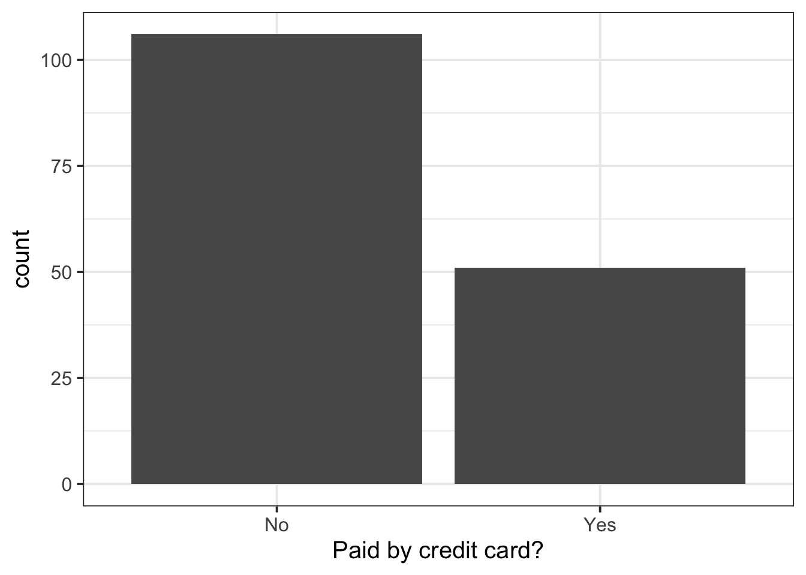
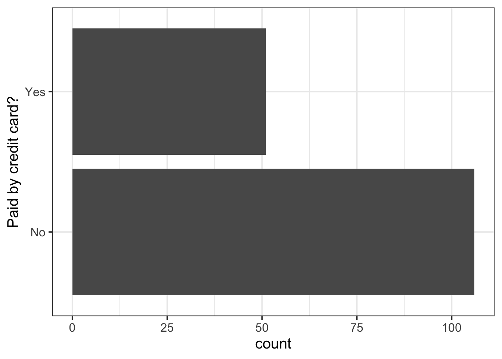
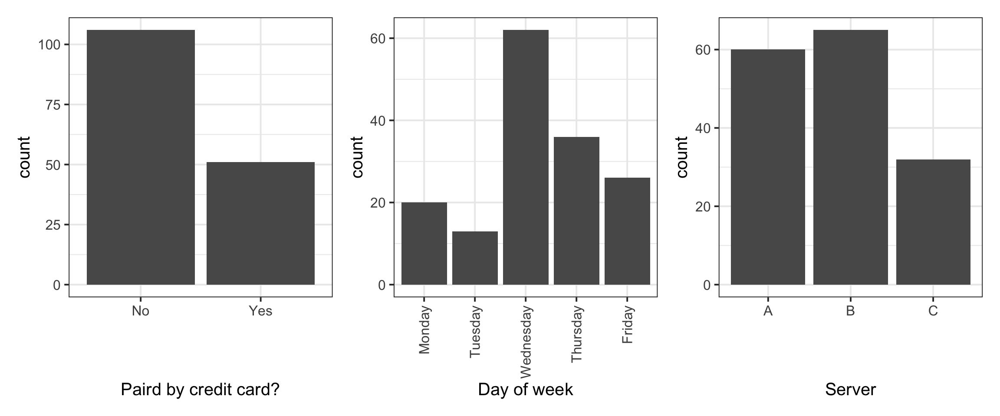

| Variable Name | Description |
|---|---|
| id | Participant ID |
| age | Age |
| language | Language group (1 = monolingual, 2 = bilingual) |
| rt_word | Reaction time (ms) for word trials |
| rt_nonword | Reaction time (ms) for non-word trials |
| acc_word | Accuracy for word trials |
| acc_nonword | Accuracy for non-word trials |
Categorical data
Semester 1 - Week 2
Formative report A
In the first five weeks of the course you should produce a PDF report using Rmarkdown for which you will receive formative feedback in week 6. Throughout those weeks, you will be working with a simulated dataset arising from a lexical decision task, adapted from Nordmann et al. (2022).
The report should not include any reference to R code or functions, but be written or a generic reader who is only assumed to have a basic statistical understanding without any R knowledge. You should also avoid any R code output or printout in the PDF file.
Data
Lexical Decision Task. One hundred participants were asked to decide whether a presented word was a real word or a non-word. The data include 100 rows (one for each participant) and 7 variables:
You can download the data from this link: https://uoepsy.github.io/data/ldt_data.csv.
Tasks
For formative report A, you will be asked to perform the following tasks, each related to a week of teaching in this course:
A1) Read the data into R and inspect it
This week’s task
A2) Display and describe the categorical data
A3) Display and describe the numerical data
A4) Display and describe a relationship of interest between two or three variables of your choice
This week you will only focus on task A2. Below there are some guided sub-steps you may want to consider to complete task A2.
A2 sub-tasks
Note
To see the hints, hover your cursor on the superscript numbers.
Reopen last week’s Rmd file, as we will continue and build on last week’s work.1
Create a plot displaying the language distribution in the sample.2
Describe the language distribution in the sample.3
Create a new column showing the frequencies as percentages. Do you notice anything different with the actual frequencies? Why?4
What is the mode of the distribution?5
Worked example
Consider the dataset available at https://uoepsy.github.io/data/RestaurantTips.csv, containing 157 observations on the following 7 variables:
| Variable Name | Description |
|---|---|
| Bill | Size of the bill (in dollars) |
| Tip | Size of the tip (in dollars) |
| Credit | Paid with a credit card? n or y |
| Guests | Number of people in the group |
| Day | Day of the week: m=Monday, t=Tuesday, w=Wednesday, th=Thursday, or f=Friday |
| Server | Code for specific waiter/waitress: A, B, or C |
| PctTip | Tip as a percentage of the bill |
These data were collected by the owner of a bistro in the US, who was interested in understanding the tipping patterns of their customers. The data are adapted from Lock et al. (2020).
library(tidyverse) # we use read_csv and glimpse from tidyverse
tips <- read_csv("https://uoepsy.github.io/data/RestaurantTips.csv")
glimpse(tips)Rows: 157
Columns: 7
$ Bill <dbl> 23.70, 36.11, 31.99, 17.39, 15.41, 18.62, 21.56, 19.58, 23.59, …
$ Tip <dbl> 10.00, 7.00, 5.01, 3.61, 3.00, 2.50, 3.44, 2.42, 3.00, 2.00, 1.…
$ Credit <chr> "n", "n", "y", "y", "n", "n", "n", "n", "n", "n", "n", "n", "n"…
$ Guests <dbl> 2, 3, 2, 2, 2, 2, 2, 2, 2, 2, 1, 1, 1, 2, 2, 3, 2, 2, 1, 5, 5, …
$ Day <chr> "f", "f", "f", "f", "f", "f", "f", "f", "f", "f", "f", "f", "f"…
$ Server <chr> "A", "B", "A", "B", "B", "A", "B", "A", "A", "B", "B", "A", "B"…
$ PctTip <dbl> 42.2, 19.4, 15.7, 20.8, 19.5, 13.4, 16.0, 12.4, 12.7, 10.7, 11.…tips$Day <- factor(tips$Day,
levels = c("m", "t", "w", "th", "f"),
labels = c("Monday", "Tuesday", "Wednesday", "Thursday", "Friday"))
tips$Credit <- factor(tips$Credit,
levels = c("n", "y"),
labels = c("No", "Yes"))
tips$Server <- factor(tips$Server)
glimpse(tips)Rows: 157
Columns: 7
$ Bill <dbl> 23.70, 36.11, 31.99, 17.39, 15.41, 18.62, 21.56, 19.58, 23.59, …
$ Tip <dbl> 10.00, 7.00, 5.01, 3.61, 3.00, 2.50, 3.44, 2.42, 3.00, 2.00, 1.…
$ Credit <fct> No, No, Yes, Yes, No, No, No, No, No, No, No, No, No, No, No, N…
$ Guests <dbl> 2, 3, 2, 2, 2, 2, 2, 2, 2, 2, 1, 1, 1, 2, 2, 3, 2, 2, 1, 5, 5, …
$ Day <fct> Friday, Friday, Friday, Friday, Friday, Friday, Friday, Friday,…
$ Server <fct> A, B, A, B, B, A, B, A, A, B, B, A, B, B, B, B, C, C, C, C, C, …
$ PctTip <dbl> 42.2, 19.4, 15.7, 20.8, 19.5, 13.4, 16.0, 12.4, 12.7, 10.7, 11.…plt_credit <- ggplot(tips, aes(x = Credit)) +
geom_bar() +
labs(x = "Paid by credit card?")
plt_credit
You can even flip the bars if you wished to:
ggplot(tips, aes(x = Credit)) +
geom_bar() +
labs(x = "Paid by credit card?") +
coord_flip()
You can use the patchwork package to place graphs side by side. Simply create an object for each graph, and concatenate the objects with | for horizontal concatenation and / for vertical concatenation of graphs.
Rotate x-axis labels
To rotate x-axis labels, you can use this code: theme(axis.text.x = element_text(angle = 90, vjust = 0.5, hjust=1))
Don’t worry, no one remembers it, and people always google “rotate x-axis labels ggplot” to find it.
library(patchwork)
plt1 <- ggplot(tips, aes(x = Credit)) +
geom_bar() +
labs(x = "Paird by credit card?")
plt2 <- ggplot(tips, aes(x = Day)) +
geom_bar() +
labs(x = "Day of week") +
theme(axis.text.x = element_text(angle = 90, vjust = 0.5, hjust=1))
plt3 <- ggplot(tips, aes(x = Server)) +
geom_bar()
plt1 | plt2 | plt3
Run install.packages("patchwork") first in your R console
# A tibble: 2 × 3
Credit n perc
<fct> <int> <dbl>
1 No 106 67.5
2 Yes 51 32.5# A tibble: 5 × 3
Day n perc
<fct> <int> <dbl>
1 Monday 20 12.7
2 Tuesday 13 8.28
3 Wednesday 62 39.5
4 Thursday 36 22.9
5 Friday 26 16.6 # A tibble: 3 × 3
Server n perc
<fct> <int> <dbl>
1 A 60 38.2
2 B 65 41.4
3 C 32 20.4You can create nice tables with the kable command or the pander command:
library(kableExtra)
kable(tbl_credit) %>% kable_styling(full_width = FALSE)| Credit | n | perc |
|---|---|---|
| No | 106 | 67.52 |
| Yes | 51 | 32.48 |
kable(tbl_day) %>% kable_styling(full_width = FALSE)| Day | n | perc |
|---|---|---|
| Monday | 20 | 12.74 |
| Tuesday | 13 | 8.28 |
| Wednesday | 62 | 39.49 |
| Thursday | 36 | 22.93 |
| Friday | 26 | 16.56 |
kable(tbl_server) %>% kable_styling(full_width = FALSE)| Server | n | perc |
|---|---|---|
| A | 60 | 38.22 |
| B | 65 | 41.40 |
| C | 32 | 20.38 |
kable(list(tbl_credit, tbl_day, tbl_server)) %>%
kable_styling()
|
|
|
From the univariate distribution (or marginal distribution) of each categorical variable we see that the most common payment method was not a credit card, and the most common day of the week to dine at that restaurant was wednesday. Finally, the most common server among the parties was B.
The most common value is the mode.
Student Glossary
To conclude the lab, add the new functions to the glossary of R functions that you started last week.
| Function | Use & Package |
|---|---|
%>% |
? |
geom_bar |
? |
count |
? |
mutate |
? |
sum |
? |
round |
? |
References
Lock, Robin H, Patti Frazer Lock, Kari Lock Morgan, Eric F Lock, and Dennis F Lock. 2020. Statistics: Unlocking the Power of Data. John Wiley & Sons.
Nordmann, Emily, Phil McAleer, Wilhelmiina Toivo, Helena Paterson, and Lisa M. DeBruine. 2022. “Data Visualization Using R for Researchers Who Do Not Use R.” Advances in Methods and Practices in Psychological Science 5 (2). https://doi.org/10.1177/25152459221074654.
Footnotes
Just joking! No hint is needed here :-)↩︎
Hint: we display categorical variables with barplots. Consider the
geom_bar()function.↩︎Hint: We describe categorical variables with frequency distributions. Consider using the
countfunction from tidyverse.↩︎Hint: the following may be useful
mutate(),sum(),round. In a report, you may only want to avoid duplication and only show the absolute frequencies.↩︎Which is the most common category? In other words, which category has the highest frequency?↩︎